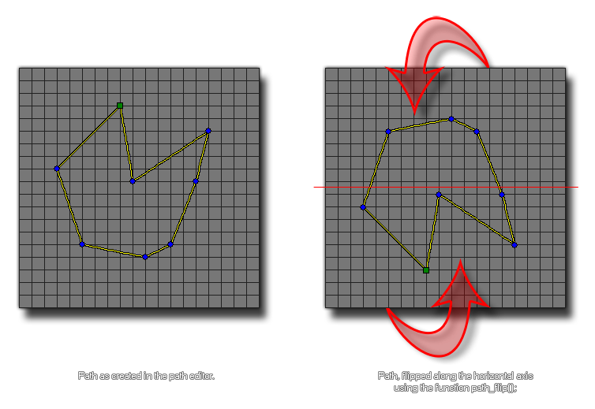

path_flip(index);
| Argument | Description |
|---|---|
| index | The index of the path to flip. |
Returns : N/A
This function takes all the path points and flips them along the horizontal axis. This function changes the actual path resource, and so will permanently affect how the path is used by all instances
in the game from the moment the function is used until the end of the game.

path_flip(mypath);
This would flip "mypath" along the horizontal axis.